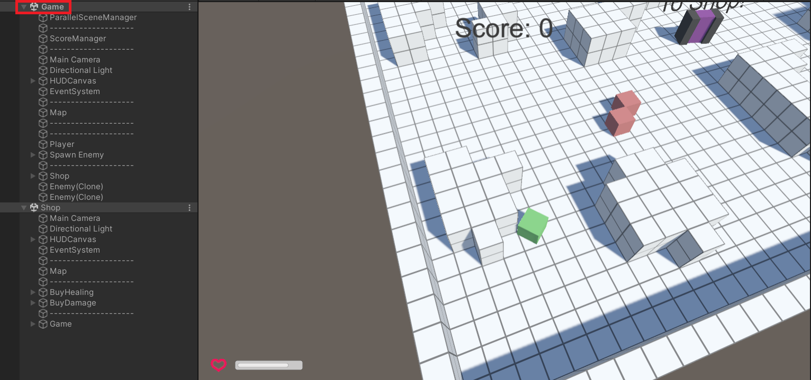
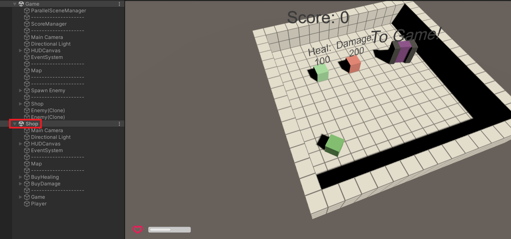
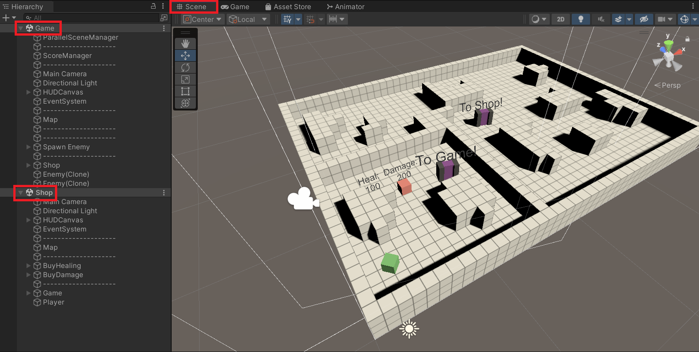

Background
In some cases you would like to run multiple scenes simultaneously, while keeping them seperated from each other. So you might have multiple scenes running in parallel for different scenarios. For example, you may have a store scene or an indoor scene that runs alongside your main game scene, and you want to be able to switch between these different scenes without unloading the other scene and without having any physical interactions (like collisons, lightning, sound, ...) between those scenes.
For example you might have a "Game" scene, next to a "Shop" scene:
And you would like to switch between the "Game" scene:

and the "Shop" scene:

This example, is also included as demo, is a simple game, where the player interacts with the "Game" scene by moving around and try to shot cubes. He get score points and can use these to buy some upgrades for himself. This happens in the "Shop" scene, which is an extra scene, uneffected by the "Game" scene itself.
No native Multi-Scene
Unfortunately, Unity currently lacks a built-in feature for running multiple scenes in parallel at runtime as described above. Sure you can load multiple scenes additive using the SceneManager but still the gameobjects of these additive loaded scenes might collide. What you might not want, because you want to keep them seperated.
While it is possible to replicate this functionality by using certain techniques and workarounds, it is important to note that there will still be some limitations and drawbacks to doing so. These limitations may include issues such as increased complexity in the codebase, potential performance bottlenecks, and difficulty in maintaining and troubleshooting the implementation.
Let's have a look at the possible workaround solutions:
- Deactivate the gameobjects of the first scene and active the ones from the second scene. And vice versa.
One option for switching between multiple scenes in Unity is to deactivate the gameobjects of the first scene and activate the ones from the second scene, and then switch back the other way when returning to the first scene. However, this method has the drawback that the gameobjects in the deactivated scene will not continue to run or update while they are inactive. This can cause issues such as maintaining the state of the gameobjects, preserving the continuity of gameplay, and ensuring that the gameobjects are ready to be used when they are reactivated. Additionally, deactivating and reactivating gameobjects can also introduce performance issues, especially if done frequently or with a large number of gameobjects. It can be a solution, but it should be used with caution and consideration of potential drawbacks and limitations.
- Have the gameobjects of the two scenes far away from each other in 3D space.
Another option for managing multiple scenes in Unity is to have the gameobjects of the different scenes placed far away from each other in 3D space. This allows the gameobjects of each scene to exist independently of one another, without interfering with each other's functionality. However, this method does require some additional considerations, such as finding a safe location to place the gameobjects of the second scene that is far enough away from the first scene so as not to cause conflicts or issues. It's also a solution that will require more attention to the design of the game, as the player's movement between the scenes should be smooth and logical.
Reason for EasyParallelScene
Both of the solutions I described above are not suitable for a game that I am developing that requires a free open world scene and a separate scene that allows an editor to interact with that world. The first solution of deactivating gameobjects and switching between scenes would not work well in this case, as it would interrupt the continuity of the open world gameplay, create lacks because of deactivation/activation of many gameobjects and also would not allow the editor to seamlessly interact with the game world. The second solution of having the gameobjects of the different scenes placed far away from each other in 3D space would also not be suitable, as the open world is procedural and so you have to find a place, the player never reached.
So, to overcome the limitations of the previously mentioned solutions, I developed my own ways using Unity's layer techniques. By assigning different layers to the gameobjects in each of the scenes, I was able to use separate cameras to render them independently and keep their colliders and physics isolated from one another. This allowed me to have a free open world scene, as well as a separate scene for the editor to interact with the world, without any interference or conflicts between the two.
This approach also allowed me to maintain the continuity of the open world gameplay and allowed the editor to make real-time changes to the game world without interrupting the player's experience. Additionally, this solution is efficient, as it avoids unnecessary rendering and physics calculation, thus improving performance. Overall, this solution proved to be a more suitable and effective approach for my game, as it addresses the specific requirements and challenges of having both open world scene and editor scene in the parallel, in the same world space and activate all the time.
Using the beginning example, the two loaded parallel scenes ("Game" and "Shop) will look in the Unity Editor Scene View like the following, because they share the same world space:

But still be rendered independently for the player, because of the EasyParallelScene approach: